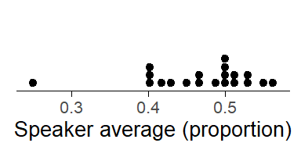

Modeling the interpretation of quantifiers using beta regression
regression
distributional modeling
This blog post shows how to use beta regression to model the proportional interpretation of the quantifiers few, some, many, and most. We consider variable-dispersion and mixed-effects structures as well as diagnostics for frequentist and Bayesian models.
The purpose of this blog post is to show how to model proportions using beta regression. This procedure is particularly suitable for outcome variables that assume values in the interval (0, 1) – but excluding 0 and 1 –, and which do not summarize underlying raw counts (e.g. .30 for 3 out of 10 “successes”), in which case they could be handled using logistic regression. Examples are proportions, rates, and other indices such as corpus-linguistic dispersion measures.
Our illustrative data represent such a fractional variable: How speakers interpret the quantifiers few, some, many, and most on the percentage (or proportion) scale. Few, for instance, may be understood as referring to about 10% of the total. A critical feature of our data is that they do not include proportions of 0 and 1. And this is in fact a requirement of beta regression, which does not work if the outcome includes values of 0 and/or 1.
We will start by introducing our illustrative data, and then model them using different beta regression models.
Linguistic research context
The need to model the perception of quantifiers arose in the context of the Bamberg Survey of Language Variation and Change(see Krug and Sell 2013), a large-scale survey on the use of various lexical and grammatical structures in varieties of English. The grammar part of the questionnaire is designed to permit estimates of the prevalence of a broad variety of (morpho-)syntactic features in two registers (speech vs. writing). To this end, respondents are asked to indicate, on a 6-point scale, how prevalent a specific feature is in their home country or region. Each sentence is presented in two modes (auditorily and in writing) and participants indicate how many speakers use this kind of structure by choosing from the following options: no-one, few, some, many, most, everyone.
The analysis and interpretation of these data can profit from the fact that these quantifiers can be understood as relative frequencies. When analyzing the data, we can assign sensible numeric scores to the ordered categories and then interpret the resulting quantities as approximate estimates of the prevalence of a specific feature. For more background on this approach and its measurement-theoretic and statistical drawbacks see Sönning (2024).
Experimental work on the perception of quantifiers
Figure 1: Literature summary: The perception of quantifiers, expressed as a percentage.
While estimates for the individual items show some variation across studies (and experiments within studies), they allow us to roughly pin down the quantitative meaning of these expressions. If we take a weighted average across the studies, where the weight of the individual percentages is proportional to the number of subjects, we obtain the following means:
few (.11, or 11%)
some (.27, or 27%)
many (.67, or 67%)
most (.83, or 83%)
Illustrative data: The perception of quantifiers
I collected additional data on the perception of these expressions, using as participants university students and colleagues that took part in the English Linguistics research seminar at the University of Bamberg in the winter term of 2023. I obtained data from 20 individuals (around 2/3 being students) by handing out paper slips with the following instructions:
Survey task: Paper slips with instructions used for data collection
Participants were given two minutes to complete the task. I then collected the paper sheets and (later) entered the data into a spreadsheet (in wide format):
dat <- readxl::read_xlsx(paste0(directory_path, "data/data_quantifiers.xlsx"))
subject
few
some
many
most
subj_01
5
15.0
30.0
50.0
subj_02
20
35.0
70.0
80.0
subj_03
10
27.5
65.0
85.0
subj_04
8
20.0
51.0
80.0
subj_05
12
30.0
50.0
75.0
subj_06
15
35.0
60.0
90.0
subj_07
25
40.0
67.5
92.5
subj_08
10
30.0
60.0
80.0
subj_09
15
33.0
67.0
85.0
subj_10
10
33.0
67.0
90.0
subj_11
10
25.0
50.0
75.0
subj_12
10
40.0
70.0
90.0
subj_13
7
20.0
60.0
85.0
subj_14
15
40.0
69.0
90.0
subj_15
15
30.0
75.0
85.0
subj_16
6
14.0
75.0
91.0
subj_17
5
12.5
65.0
80.0
subj_18
10
25.0
70.0
90.0
subj_19
15
40.0
75.0
90.0
subj_20
10
20.0
80.0
90.0
Our first step is to rearrange these data from wide to long form, and to translate percentages into proportions, as this is the scale on which beta regression operates. We also change the order of the quantifiers (from the default alphabetical arrangement) based on the relative frequency they express (see Figure 1).
d <- dat |>gather( few:most, key = quantifier, value = percentage) |>mutate(proportion = percentage/100 ) d$quantifier <-factor( d$quantifier, levels =c("few", "some", "many", "most"),ordered =TRUE)
Figure 2: Ratings collected from 20 informants.
Let us start by looking at the distribution of the responses for each quantifier using a dot diagram. Figure 2 shows that there is some variation among subjects with regard to the perceived meaning of these expressions. For many and most, in particular, there is one unusually low estimate.
Figure 3: Line plot linking the ratings provided by the same informant.
To check whether these outliers are responses from the same individual, we look at the data using a line plot that links observations from the same subject. In Figure 3, each profile represent a subject. The two unusually low responses for many and most are indeed due to the same individual, who also provided relatively (though not unusually) low ratings for few and some.
Apart from the fact that this respondent provides relatively low estimates for all quantifiers, there is no immediate reason why their data should be excluded from the analysis. We will therefore start by using the full data set and then rely on model diagnostics to see whether the data and model suggest that this informant be excluded from the analysis.
Beta regression
We now look at how to use beta regression to model these data. First, however, let us be clear about the purpose of our analysis – i.e. the kind of information we wish to extract from the data. Our goals are descriptive and we will use beta regression to summarize the data. The following quantitative features of the data will be of interest:
Averaging over the speakers in our sample, what is the typical proportional interpretation of each quantifier?
Seeing that we are dealing with a rather small sample of speakers, what is the statistical uncertainty surrounding these typical values?
How much do speakers vary in their interpretation of the individual expressions, i.e. how dispersed are their perceptions around the typical interpretation?
Beta regression can address these questions by providing (i) typical values (average proportions) for each quantifier (e.g. .12, or 12%, for few), (ii) a confidence (or posterior) interval for these estimates (e.g. 95% CI [.10; .14]), and (iii) a distributional summary of the dot diagrams we saw in Figure 2. To this end, the beta distribution serves as an abstraction of the observed distribution of responses and it allows us to make statements about, say, the share of speakers who interpret few as denoting a relative frequency of .05 or less. This kind of information is essential when we are interested in the stability (or consistency) of interpretations across speakers.
Our main focus will be on how to run beta regression using R. We therefore only include a few essentials on the beta distribution and beta regression; for more background on both, please refer to this excellent blog post(Heiss 2021a).
The beta distribution
The beta distribution is a probability distribution bounded between (but excluding) 0 and 1. It is defined by two shape parameters, \(a\) and \(b\). Figure 4 shows two beta distributions with the same mean but different spreads. Note how, for each distribution, \(a\) is .30 (or 30%) of the sum of \(a\) and \(b\). In fact, \(a/(a+b)\) denotes the mean of the distribution. Further, we note that the spread of the distribution is related to the sum of \(a\) and \(b\): The greater the sum, the “tighter”, or more peaked, the beta distribution.
Figure 4: The shape parameters \(a\) and \(b\) define the beta distribution.
As explained in much more detail by Heiss (2021a) in his blog post, the beta distribution can alternatively be written down using its mean\(\mu\) and precision\(\phi\). We have already encountered the mean, which is \(a/(a+b)\). The precision is simply \((a+b)\), and it is reflected in the spread of the distribution (see Figure 4): The greater the precision, the tighter the distribution of proportions about their mean. We can go back and forth between the two parameterization of the beta distribution as follows:
\[\begin{align}
\mu &= a/(a+b) \\
\phi &= a+b \\
\\
a &= \mu\phi \\
b &= (1-\mu)\phi
\end{align}\]
We need to be able to switch between these parameterizations. The reason is that regression models work with \(\mu\) and \(\phi\). The parameter \(\mu\) answers questions (i) and (ii). To be able to draw a beta distribution, however, and use it to summarize variation in the perception of a specific quantifier in a population of speakers, we need the shape parameters \(a\) and \(b\). We therefore use code provided by Heiss (2021a) to write a function that allow us to switch from the \(\mu\)-\(\phi\) to the \(a\)-\(b\) parameterization:
We will run a series of regression models, which differ in structure. We will start with frequentist models, using the {betareg} package (Cribari-Neto and Zeileis 2010) and then move on to Bayesian regression with the {brms} package (Bürkner 2017) to be able to incorporate by-subject random intercepts into our model.
The following table gives an overview of the series of models we are about to fit. Each model allows the outcome variable to vary by quantifier and therefore returns an estimate of \(\mu\) for each expression. Model I assumes that quantifiers are interpreted with the same precision \(\phi\), so it estimates only one \(\phi\) parameter. This means that each quantifier has the same stability of interpretation in the populations of speakers represented by our sample. In contrast, Model II allows the precision to vary across quantifiers. This means that the model provides leeway for expressions to differ in the level of stability (or consistency) with which they are interpreted. A separate \(\phi\) parameter is therefore estimated for each. This type of model has been referred to as a variable dispersion beta regression model(see Cribari-Neto and Zeileis 2010). Finally, for Model III we will switch to the {brms} package (and Bayesian inference), to be able to include random effects into our model.
Model
Constant precision
Random intercepts
Package
I
Yes
No
betareg
II
No
No
betareg
III
Yes
Yes
brms
Model I
We start with a frequentist model (using {betareg}) that allows \(\mu\) to vary across quantifiers but assumes a constant precision \(\phi\). We model \(\mu\) on the log-odds (i.e. logit) scale. We also drop the intercept from the model to directly obtain logits for each quantifier:
m1 <-betareg( proportion ~-1+ quantifier, data = d, link ="logit")print(m1)
Call:
betareg(formula = proportion ~ -1 + quantifier, data = d, link = "logit")
Coefficients (mean model with logit link):
quantifierfew quantifiersome quantifiermany quantifiermost
-1.9542 -0.9348 0.5649 1.6346
Phi coefficients (precision model with identity link):
(phi)
23.61
Before we turn to the estimates returned by the model, let’s look at a number of diagnostic plots, which are shown in Figure 5:
When graphing residuals against fitted values, we usually look for indications of heteroskedasticity, i.e. whether the spread of residuals increases with the fitted values. This is not the case for our data and model. However, the residuals surrounding the fitted values for many and most each include a large negative residual, i.e. a response that is unusually low for these quantifiers.
The quantile-quantile plot checks for normality of residuals. We have added a dot diagram at the right margin, which gives a more intuitive impression of the shape of the distribution and potential outliers. Both arrangements indicate that the residuals are negatively skewed (rather than normal), with two unusually large negative deviations.
Cook’s distance expresses the influence individual observations have on the regression coefficients. There are are two data points that appear to be particularly influential (number 41 and 61).
Since the factor Subject is so far not included in the analysis, our model does not know about the fact that responses are clustered. This may induce non-independence and lead to correlated errors, because we would expect responses by the same subject to be similar. The graph shows residuals grouped by Subject. If responses were independent, the residuals should not correlate within the factor Subject. This means that residuals should not vary systematically across subjects. If correlated errors (and hence non-independence in the data) were indeed no concern, the 20 sets (of four residuals each) would look like they represent random draws from the dot diagram shown in panel (b). However, we observe that responses by the same subject in fact tend to be alike. Subjects 1, 4, and 11, for instance, have consistently negative residuals, indicating that they gave responses that were, overall, systematically lower compared to those of the other subjects.
There are two unusual (and influential) data points
The residuals are not independent but correlated with the factor Subject.
It turns out that the two unusual and influential data points are from subject 1. These are the responses for many and most, which already stood out above in Figure 3. We will remove subject 1 from the data. As for the non-independence of errors, Model III will include by-subjects random intercepts, to account for the correlation of residuals with the factor Subject.
Let us remove subject 1, refit Model I, and again draw diagnostic plots:
d_19 <-subset(d, subject !="subj_01")m1 <-betareg( proportion ~-1+ quantifier, data = d_19, link ="logit")
There are no clear outliers when looking at residuals by quantifier.
The residuals are more nearly normally distributed.
There are no influential data points.
As panel (d) shows, however, errors are still correlated with Subject. We will address this issue further below, in Model III.
Let us now use our model to address our descriptive objectives. To answer question (i), we need to consider the \(\mu\) coefficients. These are on the logit scale, so we need to back-transform them to proportions using the function plogis():
To answer question (ii), we obtain 95% confidence intervals for these using the function confint(), keeping in mind that we again need to translate logits back into proportions. We collect estimates in Table 1.
Table 1: Typical values and 95% confidence intervals based on Model I.
Quantifier
Mean
95% CI
few
.12
[.10; .15]
some
.29
[.25; .32]
many
.66
[.62; .69]
most
.85
[.82; .88]
The following code uses the {sjPlot} package to print a similar table (output not shown):
tab_model(m1, transform ="plogis")
To be able to make statements about the stability of interpretations across speakers, we need the shape parameters of the beta distributions. Consider, as an example, the quantifier few. The estimates returned by our model are the average proportion \(\mu =\) 0.12 and the precision \(\phi =\) 35.3. We can use the function defined above to translate these into the shape parameters \(a\) and \(b\):
These shape parameters define the beta distribution that describes the spread of responses, i.e. the variation among subjects in the relative-frequency interpretation of few. The percentages reported in Table 1 are averages over subjects. To obtain information on the distribution of responses around these typical values, we need to look at the associated beta density, which appears in Figure 7. This distribution is a model-based estimate of the variability in the responses across individuals in the population of speakers represented by the subjects in our sample. It shows us how stable (or consistent) the interpretation of few is across speakers.
Figure 7: The beta density for few, based on model I.
We can summarize the information provided by such beta densities using informative quantiles; these can be located with the function qbeta(). A quantile is an x-value (here: a proportion/percentage) below which a certain portion of the probability mass lies. The .25 quantile, for instance, marks the x-value that cuts off the lower tail of the distribution that contains 25% of the mass.
In Figure 8, two intervals are marked using grey shading. The darker shade denotes the interval covering the central 50% of the subjects. It extends from the .25 quantile to the .75 quantile. The lighter shades denote the region where the middle 80% of the subjects are found. These quantiles tell us something about the speaker-to-speaker variability in the interpretation of few. While the population average is estimated at .12 (or 12%), speakers vary around this value: the central 50% of the speakers give estimates between .07 and .16, the central 80% of the population are found between .05 and .21. We will refer to these as coverage intervals.
Figure 8: The beta distribution for few, including informative quantiles and coverage intervals; based on model I.
Table 2 reports these quantiles, i.e. the central 50% and 80% coverage intervals for all quantifiers.
Table 2: 50% and 80% coverage intervals, based on Model I.
Quantifier
[80%
[50%
50%]
80%]
few
.06
.08
.16
.20
some
.19
.23
.34
.39
many
.55
.60
.71
.76
most
.77
.82
.90
.92
We can now draw a graph based on Model I that gives a visual summary of the data: Figure 9 shows the typical values for each quantifier (average proportions), along with their 95% confidence interval and the associated beta density. Since Model I assumes constant precision across quantifiers, the visual spread of the beta distributions is constrained to be constant across these. The differences in spread that are evident from Figure 9 reflect boundary effects, as the variability of proportions is naturally constrained near the scale endpoints.
Figure 9: Visual summary of Model I: Typical values, confidence intervals and the underlying beta distributions.
Model II
Next we fit a model that allows the precision \(\phi\) to vary across quantifiers; \(\phi\) is now modeled on the natural log scale. We again drop the intercept from the model to directly obtain logits (\(\mu\)) and natural logs (\(\phi\)) for each quantifier:
m2 <-betareg( proportion ~-1+ quantifier |-1+ quantifier, data = d_19, link ="logit")print(m2)
Call:
betareg(formula = proportion ~ -1 + quantifier | -1 + quantifier, data = d_19,
link = "logit")
Coefficients (mean model with logit link):
quantifierfew quantifiersome quantifiermany quantifiermost
-1.9912 -0.9013 0.6445 1.7692
Phi coefficients (precision model with log link):
quantifierfew quantifiersome quantifiermany quantifiermost
3.903 3.251 3.464 3.781
The precision parameters (Phi coefficients in the printed output) are quite similar across quantifiers. Let us therefore formally compare models I and II to see whether the added complexity is needed to adequately describe the observed data. As illustrated by Cribari-Neto and Zeileis (2010), the function lrtest(), which compares nested models using a likelihood-ratio test, may be used to this end:
lrtest(m1, m2)
Likelihood ratio test
Model 1: proportion ~ -1 + quantifier
Model 2: proportion ~ -1 + quantifier | -1 + quantifier
#Df LogLik Df Chisq Pr(>Chisq)
1 5 100.77
2 8 102.05 3 2.5591 0.4647
We note that there is little evidence from the data that the quantifiers are interpreted with different precision. Instead, the variability of responses around the typical value for each quantifier appears to be rather stable (on the logit scale) across expressions.
For illustrative purposes, we nevertheless stick to this model to extract relevant quantities. We start by back-transforming the logit-scaled coefficients and confidence intervals for \(\mu\) using the function plogis() and collect the estimates and their confidence intervals in Table 3. To summarize the beta distributions, we present informative quantiles in Table 4.
Table 4: 50% and 80% coverage intervals, based on Model II.
Quantifier
[80%
[50%
50%]
80%]
few
.07
.09
.15
.18
some
.18
.23
.35
.41
many
.55
.60
.71
.76
most
.78
.82
.89
.92
A visual summary of Model II appears in Figure 10. We observe that the beta density for few is more peaked than in Figure 9. This information can also be read from the printed regression table, which shows that few has the highest precision. This is also reflected in the coverage intervals. Whereas in Model I, the 80% coverage intervals extended from .06 to .20, Model II suggests a slightly narrower 80% coverage interval, ranging from .07 to .18.
Figure 10: Visual summary of Model II: Estimates, confidence intervals and the underlying beta distributions.
Model III
To address the issue of correlated errors (i.e. the non-independence of observations), we now add by-speaker random intercepts to our model. Since this feature is not implemented in the {betareg} package, we switch to Bayesian regression using the {brms} package. As we will now be explicitly modeling Speaker as a source of variation, let us give subject 1 a second chance. After all, the primary reason for excluding them from our analysis were the unusually low values given for many and most. We will then again look at diagnostic plots to see whether the data points from this speaker also appear problematic in the context of Model III.
As can be seen from the following R code, using {brms} requires a change in model syntax. We will rely on the default priors.
Let us first draw some diagnostic plots. Since we are dealing with a Bayesian regression model, some of the quantities we use for plotting are different. Their meaning and interpretation, however, is very similar:
Instead of weighted residuals, we look at Pearson residuals.
We will use Pareto k values as influence indicators (for more information on this, see this paper and this video tutorial). For these, thresholds have been proposed to signal “good”, “ok”, “bad”, and “very bad” Pareto k values.
Since correlated errors (within subject) should no longer be a concern, we will instead group influence measures (i.e. Pareto k values) by subject, to see if there are any influential individuals.
The diagnostic plots appear in Figure 11. We note the following:
There appear to be no outliers when looking at residuals by quantifier. This is because the random intercept for subject 1 now accomodates their unusually low responses.
The distribution of the Pearson residuals looks OK.
There is only one “bad” data point.
This “bad” observation stems from subject 16, whose responses sit less well with the model, on average. It turns out that the responses of subject 16 were drawn to the extremes: They gave relatively low responses to few (6%) and some (14%), but quite high responses to many (75%) and most (91%). This tendency towards the extremes is not captures by the random intercept for subject 16, since this parameter only represents their average response (46.5%), which is not particularly unusual.
Overall, then, we are happy with Model III and welcome subject 1 back into the dataset.
We now use Model III to address questions (i) and (ii). As described in more detail in the Marginal Effects Zoo book and in another fantastic blog post by Heiss (2021b), we use the {tidybayes} package to process the posterior distribution.
We use the model to generate posterior predictions and then summarize these. The kind of prediction we are interested in at the moment (for questions i and ii) are typical values, i.e. averages. These are sometimes referred to as expected values. We therefore use the function epred_draws(), which uses the full posterior distribution to generate expected predictions (epred) for conditions, i.e. (constellations of) predictor values. We need to specify the conditions of interest using the argument newdata. The additional argument re_formula = NA tells epred_draws() to disregard the by-subject random intercepts in this predictive task. After all, we are presently only concerned with the average across subjects.
We then summarize the posterior distribution of these expected values using the median and the .025 and .975 quantiles, which provide uncertainty estimtes similar to the 95% CIs reported for the other models.
Table 5: Typical values and 95% posterior intervals based on Model III.
Quantifier
few
.11
[.09; .14]
some
.27
[.23; .32]
many
.64
[.59; .69]
most
.84
[.81; .87]
Our next task is to obtain estimates for the variability of subjects’ perceptions around these typical values. To this end, we also use posterior predictions from the model. We are no longer interested in the expected (or typical) value, however, but in the specific responses given by the speakers. We therefore use the function predicted_draws() which retains this variability in the distribution of responses.
We must make sure, however, that the variability among subjects, which is captured by the random intercepts in our model, is worked into these predictions. Thus, in a model with random intercepts, the extraction of information about the beta distribution describing the variability of interpretations across subjects requires some care. This is because between-subjects variation is now absorbed by this model component. If we fail to actively incorporate this source of variation into our model-based predictions, these do not answer question iii, which asks about the variation across subjects in the interpretation of quantifiers.
For purposes of illustration, let us first (inappropriately) disregard the by-speaker random effects. This means that we use the expected predictions generated above to construct beta distributions. This yields Figure 12, which does not show beta densities with the intended meaning. Recall that our question (iii) concerned variability across speakers. In Model III, between-subjects variation is captured by the random intercept SD (or variance) in our model, and this parameter is not built into the graph. As a result, the beta distribution are not spread out enough.
Figure 12: Wrong visual summary of Model III: Estimates, confidence intervals and the underlying beta distributions.

Figure 13: Distribution of by-speaker averages on the proportion scale.
Before we go further, it is perhaps worth considering what kind of information the densities in Figure 12do show. They show the “residual” variation in perceived interpretation for each quantifier, after removing the model component that describes the between-speaker variability in the overall average response. Thus, the by-speaker random intercepts capture the extent to which subjects vary in their average response. To get a better understanding of the kind of variability represented by the random intercepts, Figure 13 shows the distribution of speaker averages. Most speakers vary between roughly .40 and .55. It is this kind of between-speaker variation that is captured by the random intercepts in the model.
Table 6: 50% and 80% coverage intervals, based on Model III (random intercept variation not included).
quantifier
[80%
[50%
50%]
80%]
few
.06
.08
.14
.18
some
.19
.23
.32
.36
many
.55
.59
.69
.73
most
.77
.81
.88
.91
After removing this source of variation, responses will still vary, due to other sources of variation. One such source is measurement error – speakers’ response to our short survey may fluctuate (perhaps erratically) over time. If we handed the same paper slip to our 20 respondents one year later, they would probably give (slightly) different responses. Further, speakers may not only differ in their average response (as captured by the random intercepts), but also in their perception of the individual quantifiers. For instance, a speaker may have a systematically lower perception of the quantifier few compared to other speakers. In statistical terms, this would be referred to as a subject-by-quantifier interaction.
Table 6 shows 50% and 80% coverage intervals for the beta distributions that do not contain the between-speaker variation.
To get beta densities with the intended meaning, we need to factor in the random effect. This means that we form model-based predictions that also incorporate (or represent) between-subjects variability. This is sometimes referred to as “integrating out” the random effects. As explained in more detail in the Marginal Effects Zoo book and in this blog post by Heiss (2021b), this is done by sampling from a normal distribution representing the spread of random intercepts and factoring these deviations into the posterior predicted distribution.
Table 7 shows 50% and 80% coverage intervals for the beta distributions that now contain the between-speaker variation. A visual summary of Model III with the appropriate densities appears in Figure 14.
Figure 14: Visual summary of Model III: Estimates, confidence intervals and the underlying beta distributions.
Comparison of estimates
Let us finally compare the quantities of interest across our models. Figure 15 (a) shows estimates for the typical relative-frequency interpretation of the expressions. Difference between models are minor, but Model III returns slightly wider uncertainty intervals. This is mainly because the model has been informed that the sample size is 20 (rather than 80), but also because the model has (re)incorporated subject 1.
In panel (b), the 50% and 80% coverage intervals are shown. Two comparisons are particularly informative:
Comparing models I and II, we note the effect of allowing precision to vary across quantifiers. For few, Model II returns tighter coverage intervals, since this expression is estimated to show a higher level of precision, i.e. a more stable interpretation across subjects. For many, the situation is the other way around. The differences between models I and II are minor, however, which is consistent with the results of the likelihood-ratio test reported above.
A comparison of the grey and red coverage intervals for Model III is also revealing: The red intervals are the ones that do not incorporate between-subject variability (as captured by the random intercepts). They therefore fail to answer question iii. The grey bands, on the other hand, do factor this source of variation into the predictions, and they therefore show us what we were looking for.
Figure 15: Comparison of quantities across models: (a) typical values and their uncertainty, and (b) coverage intervals.
Conclusion
In this blog post, we have looked at how to model proportional data using beta regression. Our focus was on the typical (average) interpretation speakers assign to quantifiers and its statistical uncertainty. Apart from this, we considered how to use and summarize beta densities to obtain information about the variability of interpretations (or, more specifically, responses) across subjects to quantify the stability of interpretations in the population represented by our sample of informants. We also looked at how to use model diagnostics for a frequentist and a mixed-effects Bayesian regression model to detect problematic data points and/or speakers.
References
Borges, Marilyn A., and Barbara K. Sawyers. 1974. “Common Verbal Quantifiers: Usage and Interpretation.”Journal of Experimental Psychology 102 (2): 335–38. https://doi.org/10.1037/h0036023.
Bürkner, Paul-Christian. 2017. “brms: An R Package for Bayesian Multilevel Models Using Stan.”Journal of Statistical Software 80 (1): 1–28. https://doi.org/10.18637/jss.v080.i01.
Cribari-Neto, Francisco, and Achim Zeileis. 2010. “Beta Regression in R.”Journal of Statistical Software 34 (2): 1–24. https://doi.org/10.18637/jss.v034.i02.
Heiss, Andrew. 2021a. “A Guide to Modeling Proportions with Bayesian Beta and Zero-Inflated Beta Regression Models.” November 8, 2021. https://doi.org/10.59350/7p1a4-0tw75.
———. 2021b. “A Guide to Correctly Calculating Posterior Predictions and Average Marginal Effects with Multilievel Bayesian Models.” November 10, 2021. https://doi.org/10.59350/wbn93-edb02.
Krug, Manfred, and Katrin Sell. 2013. “Designing and Conducting Interviews and Questionnaires.” In Research Methods in Language Variation and Change, edited by Manfred Krug and Julia Schlüter, 69–98. Cambridge University Press.
Newstead, Stephen E., Paul Pollard, and D. Riezebos. 1987. “The Effect of Set Size on the Interpretation of Quantifiers Used in Rating Scales.”Applied Ergonomics 18 (3): 178–82. https://doi.org/10.1016/0003-6870(87)90001-9.
Sönning, Lukas. 2024. “Ordinal Rating Scales: Psychometric Grounding for Design and Analysis.” OSF Preprints. https://doi.org/10.31219/osf.io/jhv6b.
Stateva, Penka, Arthur Stepanov, Viviane Déprez, Ludivine Emma Dupuy, and Anne Colette Reboul. 2019. “Cross-Linguistic Variation in the Meaning of Quantifiers: Implications for Pragmatic Enrichment.”Frontiers in Psychology 10: 957. https://doi.org/10.3389/fpsyg.2019.00957.
Tiel, Bob van, Michael Franke, and Uli Sauerland. 2021. “Probabilistic Pragmatics Explains Gradience and Focality in Natural Language Quantification.”Proceedings of the National Academy of Sciences 118 (9). https://doi.org/10.1073/pnas.2005453118.
Citation
BibTeX citation:
@online{sönning2024,
author = {Sönning, Lukas},
title = {Modeling the Interpretation of Quantifiers Using Beta
Regression},
date = {2024-02-29},
url = {https://lsoenning.github.io/posts/2024-01-11_beta_regression_quantifiers/},
langid = {en}
}
![]()